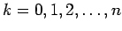
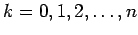

Fourier-Darstellung periodischer Funktionen (Fourier-Analyse)
Oft ist es notwendig oder vorteilhaft, eine gegebene periodische Funktion f(x) mit der Periode T exakt oder angenähert durch eine Summe aus trigonometrischen Funktionen in der Form
darzustellen. Man spricht von FOURIER-Entwicklung. Dabei gilt für die Kreisfrequenz . Im Falle  ist . Die beste Approximation von f(x) in dem unter ,,Wichtigste Eigenschaften von FOURIER-Reihen`` angegebenen Sinne erreicht man mit einer Näherungsfunktion , wenn für die Koeffizienten ak und bk mit  die FOURIER-Koeffizienten der gegebenen Funktion gewählt werden. Ihre Bestimmung geschieht analytisch mit Hilfe der EULERschen Formeln
ist . Die beste Approximation von f(x) in dem unter ,,Wichtigste Eigenschaften von FOURIER-Reihen`` angegebenen Sinne erreicht man mit einer Näherungsfunktion , wenn für die Koeffizienten ak und bk mit  die FOURIER-Koeffizienten der gegebenen Funktion gewählt werden. Ihre Bestimmung geschieht analytisch mit Hilfe der EULERschen Formeln
und
oder näherungsweise mit Hilfe der harmonischen Analyse.